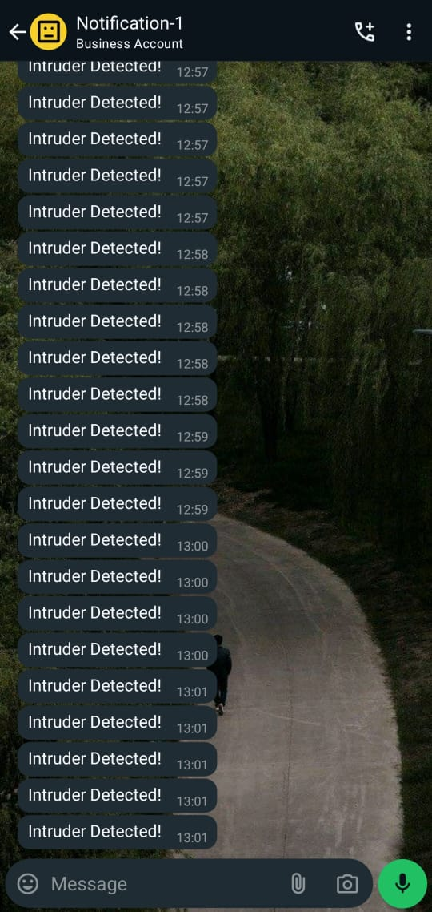
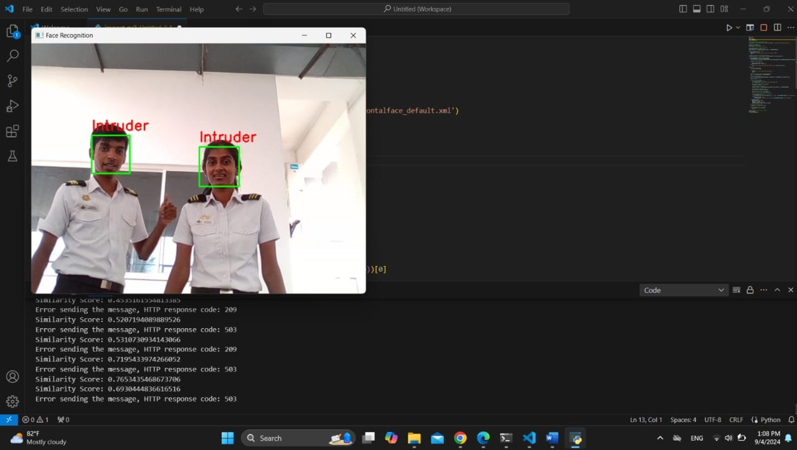

ML based Self Driving Surveillance Robot Car
An intelligent autonomous robot car equipped with computer vision, real-time intruder detection, and notification systems that combines robotics, AI/ML, and surveillance technology for enhanced security monitoring.



Project Overview
This advanced surveillance robot demonstrates the integration of autonomous navigation, computer vision, facial recognition, and real-time notification systems. The robot car autonomously patrols designated areas while continuously monitoring for intruders using ML-powered detection algorithms and instantly alerts security personnel through mobile notifications.
This autonomous mobile security system combines mobile robotics, computer vision, and machine learning to create an intelligent security system capable of patrolling designated areas, recognizing authorized personnel, and instantly alerting security teams to potential intruders. When an unknown face is detected, the system immediately captures images, logs the event with timestamp and location data, and sends real-time notifications to security personnel, enabling rapid response to security threats.
Key Components & Features
Raspberry Pi 4 & Arduino Uno
Serves as the main processing unit, handling computer vision algorithms, autonomous navigation logic, and real-time communication with notification systems that communicated in series.
HD Camera Module
High-resolution camera for real-time video capture, facial recognition, and intruder detection with 75%+ accuracy in real-world conditions.
Ultrasonic Sensors Array
2 HC-SR04 ultrasonic sensors positioned strategically for obstacle detection, distance measurement, and autonomous navigation with intelligent path planning.
DC Motors with Encoders
Precision motor control system enabling accurate movement, turning, and positioning for autonomous patrol routes and obstacle avoidance.
WiFi Communication Module
Enables real-time data transmission, remote monitoring capabilities, and instant notification delivery to mobile devices via WhatsApp and security systems.
Power Management System
Efficient battery management with voltage regulation ensuring extended operational time (2+ hours) and reliable performance during surveillance missions.
AI & Computer Vision Implementation
Facial Recognition System: Utilizes OpenCV and Haar Cascade classifier for face detection to detect and identify faces in real-time, distinguishing between authorized personnel and potential intruders with over 75% accuracy.
Intruder Detection Algorithm: Each time a snapshot is taken, the captured image is verified against the authorized personnel database. Deep learning-based face detection and recognition creates unique facial signatures for comparison with similarity thresholds tuned to balance security and usability.
Real-time Notifications: Instant alert system that sends detailed notifications including timestamps, captured images with confidence scores, and messages via WhatsApp to security personnel's mobile devices with encrypted transmission.
Autonomous Navigation: Reads sensor data that enables the robot to navigate by avoiding obstacles and maintaining optimal surveillance coverage. SLAM algorithms create and maintain maps of the environment while sensor fusion integrates data from multiple sources.
Technical Implementation
Control Architecture: Multi-threaded Python application running on Raspberry Pi 4, managing simultaneous processes for navigation, image processing, communication, and sensor data fusion with a layered navigation architecture combining high-level path planning with reactive obstacle avoidance.
Computer Vision Pipeline: Real-time picture processing using OpenCV for face detection, feature extraction, and comparison with authorized personnel database. Employs cascaded detection approach using lightweight classifiers for initial screening before applying deep learning models, achieving over 75% recognition accuracy.
Communication System: Integrated messaging system using APIs to send instant notifications with captured images, detection confidence scores, and coordinates to multiple recipients. All data transmission uses encrypted protocols for security.
Project Achievements
This comprehensive surveillance robot successfully demonstrates advanced integration across multiple technical domains:
- Artificial Intelligence: Implemented Haar Cascade classifier for accurate facial recognition and behavioral analysis with 75%+ detection accuracy
- Robotics & Automation: Developed autonomous navigation with intelligent obstacle avoidance and adaptive path planning
- Computer Vision: Real-time image processing with high-accuracy detection and classification systems operating in varying lighting conditions
- IoT & Communication: Seamless integration with mobile devices and cloud-based notification systems with less than 5 second response time
- System Integration: Coordinated multiple subsystems for reliable surveillance operations with 2+ hours of continuous operation
- Security Features: Encrypted communications, tamper detection, secure storage, and comprehensive audit trails
The completed surveillance robot demonstrates exceptional capability in autonomous security monitoring, achieving over 75% detection accuracy while maintaining continuous operation for extended periods. The system successfully integrates cutting-edge AI technology with practical robotics applications, showcasing advanced skills in mechatronics, software engineering, and intelligent system design.